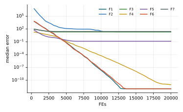

Chương 6 · Mục 6.2Chapter 6 · Section 6.2
Tối ưu bướm đêm và ngọn lửaMoth–Flame OptimizationMoth–Flame Optimization — MFOMFO — spiralling around the light
Châu Văn Vân · PTITHCM
Mục tiêu bài họcLearning objectives
Sau chương này, bạn có thểAfter this chapter you will be able to
- Giải thích định hướng ngang (transverse orientation) và vì sao bướm đêm bay xoắn quanh đèn.Explain transverse orientation and why moths spiral around lamps.
- Viết phương trình xoắn ốc logarit với D, b, t.Write the logarithmic spiral update with D, b, t.
- Mô tả ngọn lửa như bộ nhớ các lời giải tốt và cơ chế giảm số ngọn lửa.Describe flames as a memory of good solutions and the shrinking flame count.
- So sánh đường xoắn của MFO với WOA (chương 10).Compare the MFO spiral with WOA (chapter 10).
Tổng quanOverview
Bướm đêm bay theo một góc cố định với nguồn sángMoths fly at a fixed angle to a light source
- Do Seyedali Mirjalili đề xuất năm 2015 (Knowledge-Based Systems 89).Proposed by Seyedali Mirjalili in 2015 (Knowledge-Based Systems 89).
- Ban đêm, bướm đêm giữ một góc cố định với mặt trăng. Vì mặt trăng rất xa, giữ góc cố định nghĩa là bay gần như thẳng.At night, moths keep a fixed angle to the moon. Because the moon is so far away, a fixed angle means an almost straight path.
- Với ngọn đèn ở gần, cùng quy tắc đó lại tạo ra một đường xoắn ốc thu dần về phía đèn.With a nearby lamp, the same rule produces a spiral that closes in on the light.
- MFO: bướm đêm là tác tử tìm kiếm; ngọn lửa là những vị trí tốt nhất đã tìm được.In MFO, moths are search agents; flames are the best positions found so far.
Ý tưởng cốt lõiCore idea
Mỗi bướm đêm bay xoắn ốc quanh một ngọn lửa riêng; ngọn lửa là nơi tốt nhất từng tìm thấy. Theo thời gian, số ngọn lửa giảm dần, cả đàn dồn về vài ngọn sáng nhất.Each moth spirals around its own flame, the best place found so far. Over time the number of flames shrinks and the swarm gathers around the brightest few.
Mô hình toán họcMathematical model
Bướm đêm bay xoắn quanh ngọn lửa của nóA moth spirals around its flame
- b: hằng số hình dạng xoắn, thường bằng 1. t ∈ [r, 1]: t = −1 là gần ngọn lửa nhất, t = 1 là xa nhất.b: spiral shape constant, usually 1. t ∈ [r, 1]: t = −1 is closest to the flame, t = 1 the farthest.
- r giảm tuyến tính từ −1 về −2, nên càng về sau bướm đêm càng hay rơi vào vùng sát ngọn lửa: chuyển sang khai thác.r decreases linearly from −1 to −2, so later moths more often land right next to their flame: exploitation.
- Đường xoắn này giống bước xoắn ốc của WOA, nhưng mỗi bướm đêm xoắn quanh ngọn lửa riêng, không phải quanh một lời giải tốt nhất duy nhất.The spiral matches WOA's, but each moth circles its own flame, not a single global best.
Mô hình toán họcMathematical model
Giảm dần số ngọn lửa để cân bằng khám phá và khai thácShrinking the flame count to balance exploration and exploitation
- l: vòng lặp hiện tại, N: số bướm đêm tối đa, T: số vòng lặp tối đa.l: current iteration, N: maximum number of moths, T: maximum iterations.
- Ngọn lửa là N vị trí tốt nhất trong (ngọn lửa cũ ∪ bướm đêm hiện tại), sắp xếp từ tốt đến kém.Flames are the N best positions in (previous flames ∪ current moths), sorted best first.
- Bướm đêm thứ i bay quanh ngọn lửa thứ i nếu i ≤ FN; các con còn lại cùng bay quanh ngọn lửa thứ FN.Moth i circles flame i if i ≤ FN; the rest share flame FN.
Các bướcSteps
Các bước của MFOMFO step by step
Mirjalili (2015); b = 1.Mirjalili (2015); b = 1.
- Khởi tạo N bướm đêm; đánh giá.Initialize N moths; evaluate them.
- Ngọn lửa = N vị trí tốt nhất của (ngọn lửa cũ ∪ bướm đêm), đã sắp xếp.Flames = the N best positions of (old flames ∪ moths), sorted.
- Tính số ngọn lửa FN = round(N − l(N − 1)/T).Compute the flame count FN = round(N − l(N − 1)/T).
- Bướm đêm i bay xoắn ốc quanh ngọn lửa min(i, FN) với t ~ U(r, 1).Moth i spirals around flame min(i, FN) with t ~ U(r, 1).
- Giảm r từ −1 về −2; lặp đến hết ngân sách.Decrease r from −1 to −2; repeat until the budget is spent.
2 – 5 vòng lặp chínhmain loop
Thuật toánAlgorithm
Lưu đồFlowchart
Tham sốParameters
Tham số của MFOMFO parameters
| Tham sốParameter | Ý nghĩaMeaning | Giá trị thường dùngTypical value |
|---|---|---|
| b | Hệ số hình dạng xoắn ốc logaritLogarithmic spiral shape constant | 1 |
| r | Cận dưới của t, giảm tuyến tínhLower bound of t, linearly decreasing | −1 → −2 |
| FN | Số ngọn lửa, giảm từ N về 1Number of flames, from N down to 1 | round(N − l(N − 1)/T) |
Thuật toán MFOThe MFO algorithm
Mã giảPseudocode
Ngọn lửa đóng vai trò như pbest được sắp xếp; số ngọn lửa giảm dần là “công tắc” khám phá – khai thác.Flames act like sorted pbest memories; the shrinking flame count is the exploration–exploitation switch.
- Khởi tạo N bướm đêm; ngọn lửa ← bướm đêm đã sắp xếpInitialize N moths; flames ← sorted moths
- for l = 1 … T
- Tính FN và r = −1 − l/TCompute FN and r = −1 − l/T
- for mỗi bướm đêmeach moth i
- j = min(i, FN); mỗi chiều: t ~ U(r, 1)j = min(i, FN); per dimension: t ~ U(r, 1)
- Mi ← |Fj − Mi| · ebt cos(2πt) + Fj
- Đánh giá; ngọn lửa ← N vị trí tốt nhất của (ngọn lửa ∪ bướm đêm)Evaluate; flames ← best N of (flames ∪ moths)
- return ngọn lửa tốt nhấtthe best flame
Mô phỏngSimulation
12 bướm đêm và các ngọn lửa trên cùng địa hình12 moths and their flames on the same landscape
Quầng cam là các ngọn lửa còn hoạt động; số quầng giảm dần theo FN. Đường mảnh nối mỗi bướm đêm với ngọn lửa của nó.Orange glows are the active flames; their number drops with FN. Thin lines link each moth to its flame.
Tham số: N = 12, T = 60, b = 1, đúng theo bài báo gốc.Settings: N = 12, T = 60, b = 1, as in the original paper.
Ví dụ trong sách tham khảoExample from the reference book
Okwu & Tartibu (2021), chương 12: hàm Goldstein–PriceOkwu & Tartibu (2021), chapter 12: the Goldstein–Price function
| Nội dungItem | Sách ghiThe book says | Kiểm chứngVerified |
|---|---|---|
| Kết quả MFOMFO result | f = 84 tại (1.7999, 0.19996)f = 84 at (1.7999, 0.19996) | Đó là một cực tiểu cục bộ; cực tiểu toàn cục là f = 3 tại (0, −1)That is a local minimum; the global minimum is f = 3 at (0, −1) |
| Công thức 12.14Equation 12.14 | FN = round[(N − I)·(N − 1/T)]FN = round[(N − I)·(N − 1/T)] | FN = round(N − l·(N − 1)/T)FN = round(N − l·(N − 1)/T) |
| Công thức 12.13Equation 12.13 | D = F − MD = F − M | D = |F − M| (trị tuyệt đối)D = |F − M| (absolute value) |
| Công thức 12.10Equation 12.10 | lb = [lb1, …, ubn]lb = [lb1, …, ubn] | phần tử cuối phải là lbnthe last entry should be lbn |
Bài học: một lần chạy dừng ở cực tiểu cục bộ vẫn trông như “hội tụ”. Luôn so với giá trị tối ưu đã biết và chạy nhiều lần.Lesson: a run stuck in a local minimum still looks “converged”. Always compare with the known optimum and use many runs.
Ví dụ tính tayWorked example
Số ngọn lửa và một bước xoắn ốcFlame count and one spiral step
- N = 30, T = 500, l = 250: FN = round(30 − 14.5) = 16.N = 30, T = 500, l = 250: FN = round(30 − 14.5) = 16.
- Giữa quá trình, chỉ còn khoảng một nửa số ngọn lửa dẫn đường.Halfway through, only about half the flames still guide moths.
Xoắn ốcSpiral
- F = 3, M = 1, b = 1, t = −0.5: D = 2.F = 3, M = 1, b = 1, t = −0.5: D = 2.
- S = 2 e−0.5 cos(−π) + 3 = 1.787: bướm đêm vòng sang phía bên kia, gần ngọn lửa hơn.S = 2 e−0.5 cos(−π) + 3 = 1.787: the moth swings to the other side, closer to the flame.
Các biến thểVariants
Các biến thể của MFOMFO variants
MOMFOMOMFO
Bản đa mục tiêu dùng kho Pareto.Multi-objective version with a Pareto archive.
MFO + LévyMFO + Lévy
Thêm bước Lévy để thoát cực trị cục bộ.Add Lévy steps to escape local optima.
MFO nhị phânBinary MFO
Hàm chuyển S/V cho chọn đặc trưng (chương 15).S/V transfer functions for feature selection (chapter 15).
MFO laiHybrid MFO
Kết hợp với DE hoặc PSO.Combined with DE or PSO.
Ứng dụngApplications
Ứng dụng của MFOMFO applications
Các bài toán thường gặp với MFO.Problems commonly tackled with MFO.
Năng lượngEnergy
Dòng công suất tối ưu, điều độ.Optimal power flow, dispatch.
Thiết kếDesign
Bài toán kỹ thuật có ràng buộc.Constrained engineering problems.
Học máyMachine learning
Chỉnh SVM, chọn đặc trưng.SVM tuning, feature selection.
ẢnhImaging
Phân ngưỡng đa mức.Multi-level thresholding.
Thực nghiệm · MFOExperiment · MFO
Kết quả trên bộ 7 hàm, D = 10, 30 lần chạyResults on the 7-function suite, D = 10, 30 runs
| HàmFunction | Trung bìnhMean | Độ lệchStd | Trung vịMedian | so PSOvs PSO |
|---|---|---|---|---|
| F1 · Sphere | 0 | 0 | 0 | ≈ |
| F2 · Rosenbrock | 3.48e+3 | 1.64e+4 | 2.22e+1 | − |
| F3 · Rastrigin | 2.29e+1 | 1.15e+1 | 2.04e+1 | − |
| F4 · Ackley | 1.32e+0 | 4.80e+0 | 0 | ≈ |
| F5 · Griewank | 1.68e−1 | 1.23e−1 | 1.38e−1 | ≈ |
| F6 · Shifted Sphere | 1.58e+2 | 6.00e+2 | 0 | ≈ |
| F7 · Shifted Rastrigin | 2.91e+1 | 1.41e+1 | 2.63e+1 | − |
- Sai số f(xbest) − f* sau 20 000 lần đánh giá; n = 30; tham số mặc định của bài gốc; giá trị < 10−8 ghi là 0.Error f(xbest) − f* after 20,000 evaluations; n = 30; default parameters of the original paper; values < 10−8 shown as 0.
- Cột cuối: Wilcoxon rank-sum với PSO (α = 0.05): + tốt hơn, − kém hơn, ≈ không khác biệt.Last column: Wilcoxon rank-sum vs PSO (α = 0.05): + better, − worse, ≈ no difference.
- Xếp hạng Friedman trung bình: 9.50, đứng thứ 11/18 trong 18 thuật toán của giáo trình.Average Friedman rank: 9.50, position 11/18 among the textbook’s 18 algorithms.
Thực nghiệm · MFOExperiment · MFO
Đường hội tụ (trung vị 30 lần chạy)Convergence (median of 30 runs)

Mã nguồnSource code
Mã nguồn PythonPython source code
Đoạn trích phần cập nhật chính; tệp đầy đủ có chú thích và tham số mặc định theo bài gốc.Excerpt of the main update; the full file documents the default parameters of the original paper. code/si/algorithms/mfo.py
while not prob.done: l += 1 FN = int(round(n - l * (n - 1) / T)); FN = max(FN, 1) r = -1 + l * (-1 / T) for i in range(n): j = min(i, FN - 1) t = (r - 1) * rng.random(prob.dim) + 1 Dd = np.abs(F[j] - M[i]) M[i] = Dd * np.exp(b * t) * np.cos(2 * np.pi * t) + F[j] M = prob.clip(M) mf = prob(M) allx = np.vstack([F, M]); allf = np.concatenate([ff, mf]) o = np.argsort(allf)[:n] F, ff = allx[o], allf[o] return prob.best_x, prob.best_f
Chạy lại toàn bộ thực nghiệm: python -m experiments.run_continuous trong thư mục code/ (xem PROTOCOL.md).Reproduce all experiments: python -m experiments.run_continuous inside code/ (see PROTOCOL.md).
Đánh giáAssessment
Đơn giản, có bộ nhớ, nhưng dễ mắc kẹtSimple and memory-based, but easily trapped
Điểm mạnhStrengths
- Cài đặt rất ngắn; chỉ thêm hằng số b.Very short to implement; only the constant b is added.
- Ngọn lửa là bộ nhớ đã sắp xếp nên không bao giờ mất lời giải tốt.Flames are a sorted memory, so good solutions are never lost.
- Nhiều ngọn lửa ở đầu quá trình giúp tìm song song quanh nhiều vùng.Many early flames let the swarm search several regions in parallel.
Hạn chế và biến thểLimitations and variants
- FN giảm tuyến tính nên đa dạng mất đi nhanh ở nửa sau; dễ kẹt cục bộ như ví dụ Goldstein–Price.FN drops linearly, so diversity vanishes in the second half; local traps like the Goldstein–Price example are common.
- Không có bước khám phá ngẫu nhiên độc lập với ngọn lửa.There is no exploration step independent of the flames.
- Biến thể: MFO với bước Lévy, MFO hỗn loạn, MFO nhị phân; tổng quan của Shehab và cs. (2020).Variants: Lévy-flight MFO, chaotic MFO, binary MFO; see the survey by Shehab et al. (2020).
Bài tập và thực hànhExercises and labs
Luyện tập: tính tay rồi lập trìnhPractice: by hand, then in code
Bài tập lý thuyếtTheory exercises
- Với N = 30, T = 100, tính FN tại l = 0, 50, 100.With N = 30, T = 100, compute FN at l = 0, 50, 100.
- Một chiều: F = 0, M = 2, b = 1, t = −0.5. Tính vị trí mới.One dimension: F = 0, M = 2, b = 1, t = −0.5. Compute the new position.
- So sánh vai trò của ngọn lửa trong MFO với pbest trong PSO.Compare MFO flames with pbest in PSO.
Thực hành Python / MATLABPython / MATLAB labs
- Cài MFO; chạy 30 lần trên Goldstein–Price và đếm số lần đạt cực tiểu toàn cục 3 so với cục bộ 84.Implement MFO; run it 30 times on Goldstein–Price and count global (3) versus local (84) outcomes.
- So sánh MFO với WOA cùng ngân sách đánh giá hàm.Compare MFO with WOA under the same evaluation budget.
- Thử giảm FN theo hàm mũ thay vì tuyến tính và nhận xét.Try an exponential rather than linear decrease of FN and comment.
Tài liệu tham khảoReferences
Đọc thêm: các bài báo gốcFurther reading: the original papers
- S. Mirjalili, “The Ant Lion Optimizer,” Advances in Engineering Software, vol. 83, pp. 80–98, 2015, doi: 10.1016/j.advengsoft.2015.01.010.
- S. Mirjalili, “Moth-flame optimization algorithm: A novel nature-inspired heuristic paradigm,” Knowledge-Based Systems, vol. 89, pp. 228–249, 2015, doi: 10.1016/j.knosys.2015.07.006.
- E. Emary, H. M. Zawbaa, and A. E. Hassanien, “Binary ant lion approaches for feature selection,” Neurocomputing, vol. 213, pp. 54–65, 2016, doi: 10.1016/j.neucom.2016.03.101.
- M. Shehab, L. Abualigah, H. Al Hamad, H. Alabool, M. Alshinwan, and A. M. Khasawneh, “Moth–flame optimization algorithm: variants and applications,” Neural Comput & Applic, vol. 32, no. 14, pp. 9859–9884, 2020, doi: 10.1007/s00521-019-04570-6.
- M. O. Okwu and L. K. Tartibu, Metaheuristic Optimization: Nature-Inspired Algorithms Swarm and Computational Intelligence, Theory and Applications. Springer International Publishing, 2021, doi: 10.1007/978-3-030-61111-8.
Tóm lạiIn short
Cảm ơn các bạn đã theo dõiThank you for your attention
Châu Văn Vân · PTITHCM · Tài liệu gốc: Mirjalili, Knowledge-Based Systems 89, 2015Original paper: Mirjalili, Knowledge-Based Systems 89, 2015